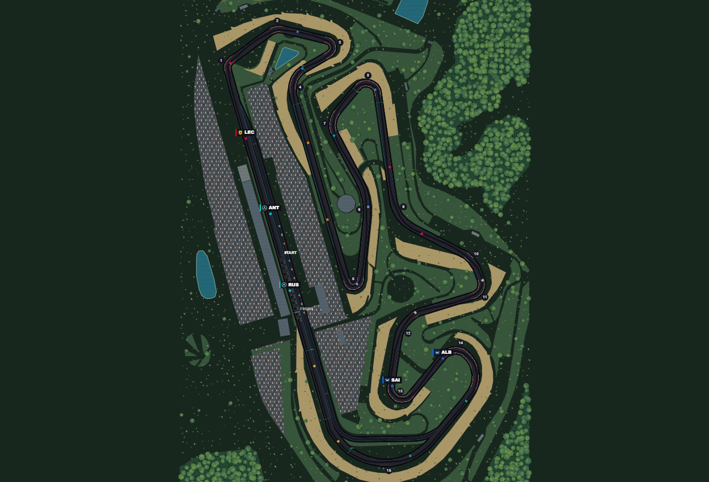
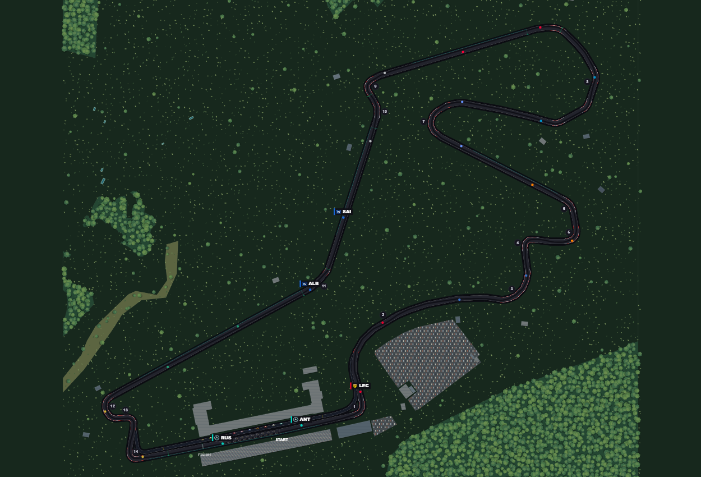
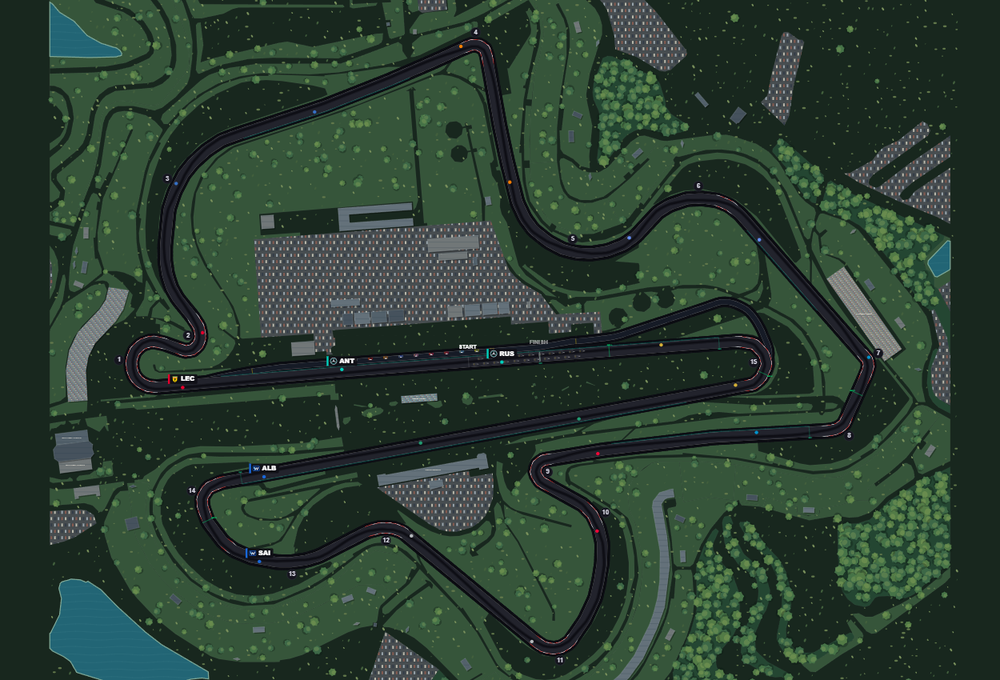

NEW PLAYABLE MAP
Portimão / Algarve

4.653 km · 15 turns · independent pit road
Included in game seasons: 2027, 2028.
2021 FIA baseline. Nominal constant width; local road boundaries have not been surveyed.
NEW PLAYABLE MAP
Istanbul Park

5.338 km · 14 turns · independent pit road
Included in game seasons: 2027, 2028, 2029, 2030.
2021 FIA baseline. Nominal constant width; local road boundaries have not been surveyed.
NEW PLAYABLE MAP
Sepang

5.543 km · 15 turns · independent pit road
Included in game seasons: 2026.
2026 FIA baseline. Nominal constant width; local road boundaries have not been surveyed.